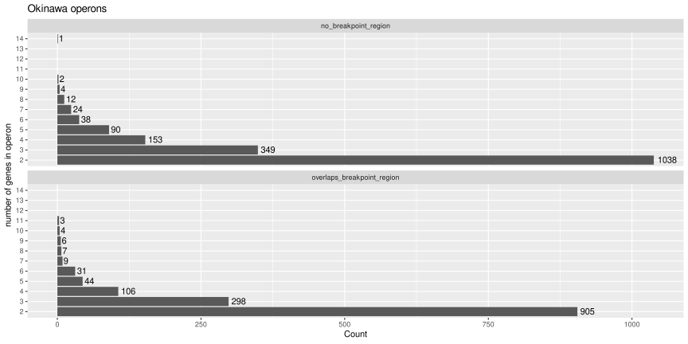
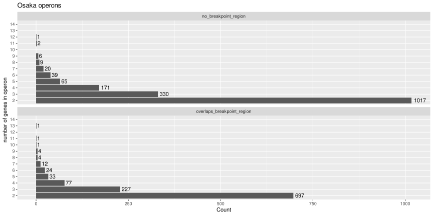
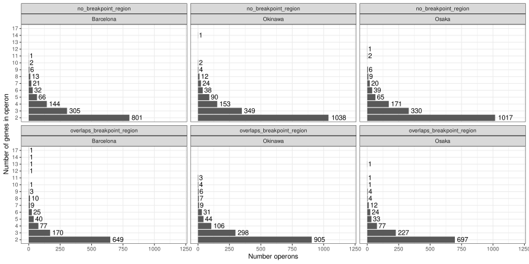
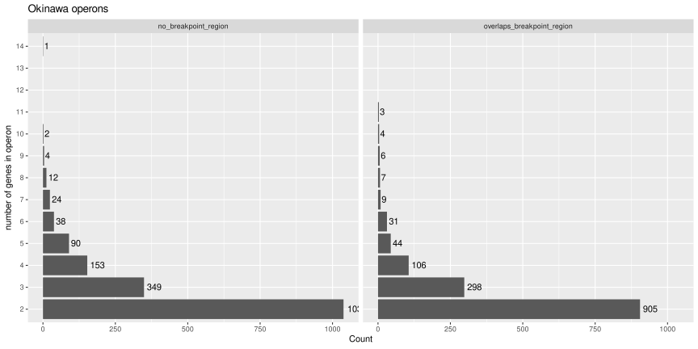
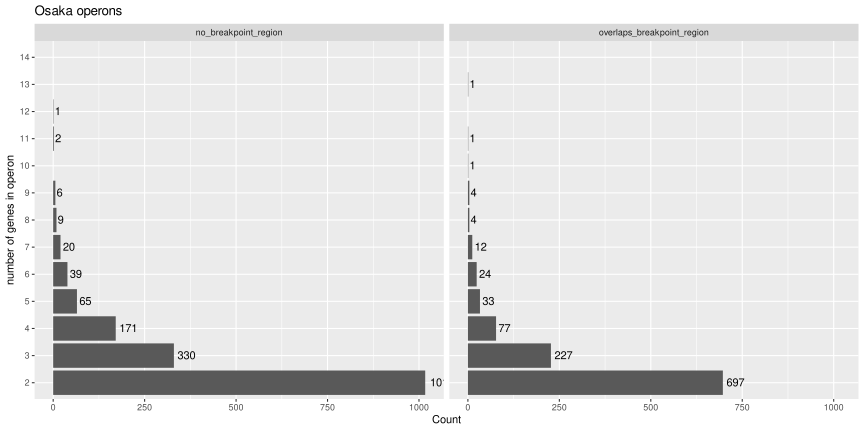
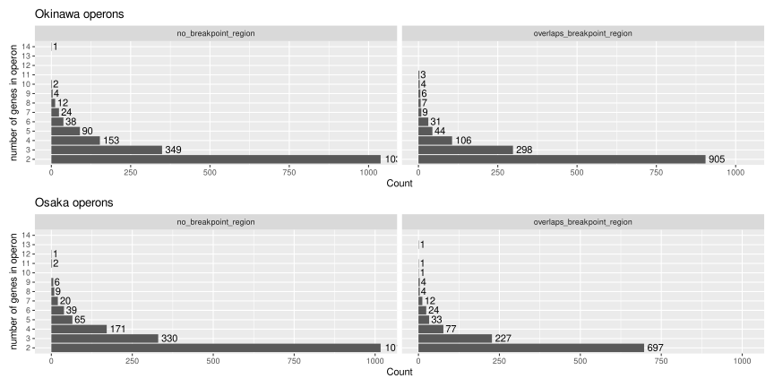
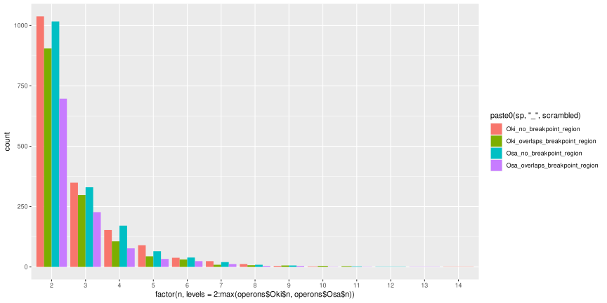
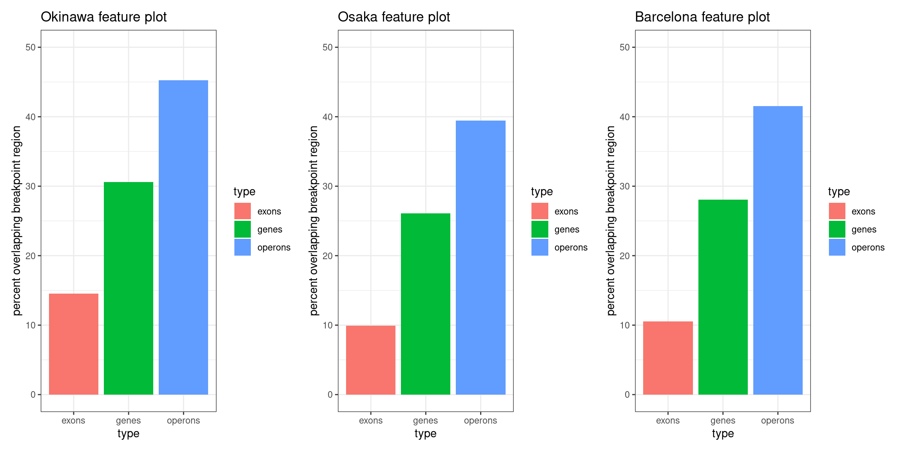
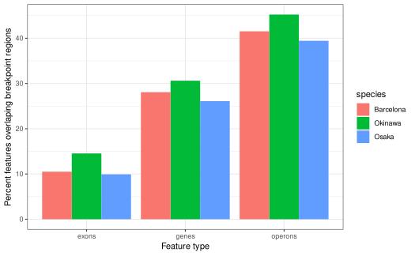

vignettes/OperonDetection.Rmd
OperonDetection.RmdComputes operons as we need their boundaries in the figure panel.
** Figure 4 panels B and C are produced by this vignette**
See ?OikScrambling:::loadAllGenomes,
?OikScrambling:::loadAllTranscriptsGR, and
vignette("LoadGenomicBreaks", package = "OikScrambling")
for how the different objects are prepared.
library('OikScrambling') |> suppressPackageStartupMessages()
library('GenomicFeatures') |> suppressPackageStartupMessages()
library('heatmaps') |> suppressPackageStartupMessages()
library('patchwork') |> suppressPackageStartupMessages()
genomes <- OikScrambling:::loadAllGenomes(compat = F)## Warning in runHook(".onLoad", env, package.lib, package): input string
## 'Génoscope' cannot be translated from 'ANSI_X3.4-1968' to UTF-8, but is valid
## UTF-8
## Warning in runHook(".onLoad", env, package.lib, package): input string
## 'Génoscope' cannot be translated from 'ANSI_X3.4-1968' to UTF-8, but is valid
## UTF-8
# Cannot use Knitr cache as long as "annot" objects are used.
annots <- OikScrambling:::loadAllAnnotations() |> suppressWarnings()
reps <- OikScrambling:::loadAllRepeats(compat = F)
genes <- sapply(annots, function(a) sort(genes(a))) |> SimpleList()
load("BreakPoints.Rdata")
requireNamespace("rGADEM") |> suppressPackageStartupMessages()
requireNamespace("ggseqlogo") |> suppressPackageStartupMessages()
ces <- readRDS("CEs.Rds")
tfbs <- readRDS("pwmMatchesOki_12_95.Rds")We need operon boundaries in the plots generated later.
The operon of Ganot
et al., 2004 appears to be conserved in OKI and OSA (near
OSKA2016v1.9::PAR:10984831-10995276). In the annotation
visible in ZENBU and NCBI:
Oidioi.mRNA.OKI2018_I69.PAR.g12978 is the most likely
start of the Ganot operon as it starts downstream of a CAGE TSS peak and
has no trans-splicing site. It is homologous to
g10133 (PAR:10985271..10985910+) in OSKA2016v1.9 which also
has a transcription start site and no trans-splicing site. Best
Norwegian hit is CBY19033. Gene name is unclear but weaker
blast hits suggest centrosomal POC5 isoform X1.Oidioi.mRNA.OKI2018_I69.PAR.g12977 and is
g10134 in OSKA2016. It has a bona fide trans-splicing site
in both genomes. It is CBY19034 in Norway. (Not reported in
Ganot et al., 2004).Oidioi.mRNA.OKI2018_I69.PAR.g12976.
(First member of the operon of Ganot et al., 2004, which calls it
Ran-binding protein 16). In the current annotation of the OSKA2016v1.9
genome, g10135 matches well but misses the N-terminal part.
Nevertheless a blastx search in region
PAR:10986742..10988032+ finds it. In line with this, there
is a trans-splicing site upstream the unannotated area.Oidioi.mRNA.OKI2018_I69.PAR.g12975.Oidioi.mRNA.OKI2018_I69.PAR.g12974.Oidioi.mRNA.OKI2018_I69.PAR.g12973.
Also called enthelial differenciation-related factor 1 in other
species.Oidioi.mRNA.OKI2018_I69.PAR.g12972 and
g10138 in OSKA. Polyadenylation signal conserved.(Note that the transcripts IDs here differ from the public ones.)
Ganot et al., 2004 reported very small (<30) intercistronic regions and Denoeud et al., 2010 stated: “The operons were predicted as co-oriented genes separated by 60 nucleotides at most : 1761 operons containing 4997 genes were predicted on the reference assembly”. However, in our annotation, we do not have the UTRs, but only the distances between translation stops and starts, so we need a broader window. The example below shows that a window of 400 would break the Ganot 2004 operon, so let’s use 500 instead.
transcripts(annots$Oki) |> subsetByOverlaps(GRanges("PAR:15956430-15967745"))## GRanges object with 8 ranges and 2 metadata columns:
## seqnames ranges strand | tx_id tx_name
## <Rle> <IRanges> <Rle> | <integer> <character>
## [1] PAR 15956464-15957432 - | 14303 g12997.t1
## [2] PAR 15957795-15958315 - | 14304 g12998.t1
## [3] PAR 15958381-15959726 - | 14305 g12999.t1
## [4] PAR 15959875-15960185 - | 14306 g13000.t1
## [5] PAR 15960589-15964701 - | 14307 g13001.t1
## [6] PAR 15960653-15964701 - | 14308 g13001.t2
## [7] PAR 15964824-15965481 - | 14309 g13002.t1
## [8] PAR 15965608-15967583 - | 14310 g13003.t1
## -------
## seqinfo: 19 sequences from OKI2018.I69 genome
transcripts(annots$Oki) |> subsetByOverlaps(GRanges("PAR:15956430-15967745")) |> cleanGaps() |> width()## [1] 362 65 148 403 122 126This function is reused (cut-and-paste) in other vignettes.
operons <- lapply(annots, \(a) {a |> genes() |> OikScrambling:::calcOperons(window = 500) }) |> SimpleList() |> suppressWarnings()
operons$Nor <- OikScrambling:::calcOperons(window = 500, transcripts(annots$Nor) |> reduce()) |> suppressWarnings()
sapply(operons, length)## Oki Osa Bar Kum Aom Nor Ply Ros
## 3124 2741 2379 2974 2648 2996 1088 1472## $Oki
##
## 2 3 4 5 6 7 8 9 10 11 14
## 1943 647 259 134 69 33 19 10 6 3 1
##
## $Osa
##
## 2 3 4 5 6 7 8 9 10 11 12 13
## 1714 557 248 98 63 32 13 10 1 3 1 1
##
## $Bar
##
## 2 3 4 5 6 7 8 9 10 11 12 13 14 17
## 1450 475 221 106 57 30 23 9 3 1 1 1 1 1
##
## $Kum
##
## 2 3 4 5 6 7 8 9 10 11 12 13 14 17
## 1855 648 233 114 56 28 18 4 7 6 1 1 2 1
##
## $Aom
##
## 2 3 4 5 6 7 8 9 10 11 12 14
## 1689 492 239 107 52 36 14 10 3 4 1 1
##
## $Nor
##
## 2 3 4 5 6 7 8 9 10 11 12 13 14 15 16 17
## 1724 562 264 138 93 65 38 40 16 21 11 10 3 4 3 1
## 20 22
## 1 2
##
## $Ply
##
## 2 3 4 5 6 7 8 9 13 14 15
## 937 114 22 6 2 1 1 1 1 1 2
##
## $Ros
##
## 2 3 4 5 6 7 9 10 11 21 26 29
## 1262 163 33 5 1 1 1 1 1 1 1 2With the OdB3 genome, the results are apparently close to those of Denoeud et al., 2010 (see above for why the difference). We have a few more (1844 instead of 1761), they contain more genes (5814 instead of 4997), mostly because our computation outputs 50 operons longer than 9 genes (617 genes in total). Nevertheless, the proportion of operons of length 2, 3 and 4 are visually similar in both cases.
Do alignments often cross gene or operon boundaries ?
# Distribution of operon lengths
operons$Oki$n |> table()##
## 2 3 4 5 6 7 8 9 10 11 14
## 1943 647 259 134 69 33 19 10 6 3 1
# An operon is scrambled if it overlaps with an unaligned noncoalesced (= unmapped) region
scrambled_operons <- subsetByOverlaps(operons$Oki, unal$Oki_Osa[unal$Oki_Osa$nonCoa])
not_scrambled_operons <- operons$Oki[! operons$Oki %in% scrambled_operons ]
# Distribution of operon lengths (scrambled)
scrambled_operons$n |> table()##
## 2 3 4 5 6 7 8 9 10 11
## 905 298 106 44 31 9 7 6 4 3
not_scrambled_operons$n |> table()##
## 2 3 4 5 6 7 8 9 10 14
## 1038 349 153 90 38 24 12 4 2 1
# Example of long scrambled operons
scrambled_operons[scrambled_operons$n > 5]## GRanges object with 60 ranges and 2 metadata columns:
## seqnames ranges strand | n gene_id
## <Rle> <IRanges> <Rle> | <integer> <CharacterList>
## [1] chr1 5715727-5730794 + | 7 g1521,g1522,g1523,...
## [2] chr1 6147428-6157837 + | 6 g1613,g1614,g1615,...
## [3] chr1 9809914-9836205 + | 10 g2620,g2621,g2622,...
## [4] chr1 10022216-10035952 + | 7 g2668,g2669,g2670,...
## [5] chr1 10547772-10569235 - | 9 g2832,g2833,g2834,...
## ... ... ... ... . ... ...
## [56] XSR 6611822-6622862 + | 7 g15207,g15208,g15209,...
## [57] XSR 6843015-6861410 + | 8 g15282,g15283,g15284,...
## [58] XSR 7875989-7897781 - | 7 g15606,g15607,g15608,...
## [59] XSR 10693937-10705412 + | 6 g16499,g16500,g16501,...
## [60] XSR 12736159-12757464 - | 8 g17016,g17017,g17018,...
## -------
## seqinfo: 19 sequences from OKI2018.I69 genomeIn comparison: genes
all_genes <- genes(annots$Oki)
scrambled_genes <- (subsetByOverlaps(all_genes, unal$Oki_Osa[unal$Oki_Osa$nonCoa])) |> sort(i=F) |> flagLongShort(longShort$OKI2018.I69)
not_scrambled_genes <- all_genes[! all_genes %in% scrambled_genes] |> sort(i=F) |> flagLongShort(longShort$OKI2018.I69)
length(scrambled_genes)## [1] 5294
length(all_genes)## [1] 17291
scr_g_tbl <- table(paste(seqnames( scrambled_genes), scrambled_genes$Arm))
nsc_g_tbl <- table(paste(seqnames(not_scrambled_genes), not_scrambled_genes$Arm))
Oki_Osa_scr_ratio_long_arm <- c(
scr_g_tbl[["chr1 long"]] / ( scr_g_tbl[["chr1 long"]] + nsc_g_tbl[["chr1 long"]]),
scr_g_tbl[["chr2 long"]] / ( scr_g_tbl[["chr2 long"]] + nsc_g_tbl[["chr2 long"]]),
scr_g_tbl[["PAR long"]] / ( scr_g_tbl[["PAR long"]] + nsc_g_tbl[["PAR long"]])
)
mean(Oki_Osa_scr_ratio_long_arm)## [1] 0.2314521
Oki_Osa_scr_ratio_short_arm <- c(
scr_g_tbl[["chr1 short"]] / ( scr_g_tbl[["chr1 short"]] + nsc_g_tbl[["chr1 short"]]),
scr_g_tbl[["chr2 short"]] / ( scr_g_tbl[["chr2 short"]] + nsc_g_tbl[["chr2 short"]]),
scr_g_tbl[["PAR short"]] / ( scr_g_tbl[["PAR short"]] + nsc_g_tbl[["PAR short"]])
)
mean(Oki_Osa_scr_ratio_short_arm)## [1] 0.5374672
t.test(Oki_Osa_scr_ratio_long_arm, Oki_Osa_scr_ratio_short_arm, paired = T)##
## Paired t-test
##
## data: Oki_Osa_scr_ratio_long_arm and Oki_Osa_scr_ratio_short_arm
## t = -9.5775, df = 2, p-value = 0.01073
## alternative hypothesis: true mean difference is not equal to 0
## 95 percent confidence interval:
## -0.4434904 -0.1685397
## sample estimates:
## mean difference
## -0.3060151Replicate on an independent pair of genomes.
all_genes <- genes(annots$Bar)
scrambled_genes <- (subsetByOverlaps(all_genes, unal$Bar_Kum[unal$Bar_Kum$nonCoa])) |> sort(i=F) |> flagLongShort(longShort$Bar2.p4)
not_scrambled_genes <- all_genes[! all_genes %in% scrambled_genes] |> sort(i=F) |> flagLongShort(longShort$Bar2.p4)
length(scrambled_genes)## [1] 4002
length(all_genes)## [1] 14272
scr_g_tbl <- table(paste(seqnames( scrambled_genes), scrambled_genes$Arm))
nsc_g_tbl <- table(paste(seqnames(not_scrambled_genes), not_scrambled_genes$Arm))
Bar_Kum_scr_ratio_long_arm <- c(
scr_g_tbl[["Chr1 long"]] / ( scr_g_tbl[["Chr1 long"]] + nsc_g_tbl[["Chr1 long"]]),
scr_g_tbl[["Chr2 long"]] / ( scr_g_tbl[["Chr2 long"]] + nsc_g_tbl[["Chr2 long"]]),
scr_g_tbl[["PAR long"]] / ( scr_g_tbl[["PAR long"]] + nsc_g_tbl[["PAR long"]])
)
Bar_Kum_scr_ratio_short_arm <- c(
scr_g_tbl[["Chr1 short"]] / ( scr_g_tbl[["Chr1 short"]] + nsc_g_tbl[["Chr1 short"]]),
scr_g_tbl[["Chr2 short"]] / ( scr_g_tbl[["Chr2 short"]] + nsc_g_tbl[["Chr2 short"]]),
scr_g_tbl[["PAR short"]] / ( scr_g_tbl[["PAR short"]] + nsc_g_tbl[["PAR short"]])
)
t.test(Bar_Kum_scr_ratio_long_arm, Bar_Kum_scr_ratio_short_arm, paired = TRUE)##
## Paired t-test
##
## data: Bar_Kum_scr_ratio_long_arm and Bar_Kum_scr_ratio_short_arm
## t = -16.994, df = 2, p-value = 0.003445
## alternative hypothesis: true mean difference is not equal to 0
## 95 percent confidence interval:
## -0.3825454 -0.2279699
## sample estimates:
## mean difference
## -0.3052576## [1] 0.2055334## [1] 0.5111697
t.test(
c(Oki_Osa_scr_ratio_long_arm, Bar_Kum_scr_ratio_long_arm),
c(Oki_Osa_scr_ratio_short_arm, Bar_Kum_scr_ratio_short_arm),
paired = TRUE
)##
## Paired t-test
##
## data: c(Oki_Osa_scr_ratio_long_arm, Bar_Kum_scr_ratio_long_arm) and c(Oki_Osa_scr_ratio_short_arm, Bar_Kum_scr_ratio_short_arm)
## t = -18.644, df = 5, p-value = 8.172e-06
## alternative hypothesis: true mean difference is not equal to 0
## 95 percent confidence interval:
## -0.3477765 -0.2634962
## sample estimates:
## mean difference
## -0.3056363How about exons ?
all_exons <- exonicParts(annots$Oki)
scrambled_exons <- (subsetByOverlaps(all_exons, unal$Oki_Osa[unal$Oki_Osa$nonCoa])) |> sort(i=F) |> flagLongShort(longShort$OKI2018.I69)
not_scrambled_exons <- all_exons[! all_exons %in% scrambled_exons] |> sort(i=F) |> flagLongShort(longShort$OKI2018.I69)
length(scrambled_exons)## [1] 16787
length(all_exons)## [1] 106811
scr_g_tbl <- table(paste(seqnames( scrambled_exons), scrambled_exons$Arm))
nsc_g_tbl <- table(paste(seqnames(not_scrambled_exons), not_scrambled_exons$Arm))
Oki_Osa_scr_ratio_long_arm <- c(
scr_g_tbl[["chr1 long"]] / ( scr_g_tbl[["chr1 long"]] + nsc_g_tbl[["chr1 long"]]),
scr_g_tbl[["chr2 long"]] / ( scr_g_tbl[["chr2 long"]] + nsc_g_tbl[["chr2 long"]]),
scr_g_tbl[["PAR long"]] / ( scr_g_tbl[["PAR long"]] + nsc_g_tbl[["PAR long"]])
)
mean(Oki_Osa_scr_ratio_long_arm)## [1] 0.1172023
Oki_Osa_scr_ratio_short_arm <- c(
scr_g_tbl[["chr1 short"]] / ( scr_g_tbl[["chr1 short"]] + nsc_g_tbl[["chr1 short"]]),
scr_g_tbl[["chr2 short"]] / ( scr_g_tbl[["chr2 short"]] + nsc_g_tbl[["chr2 short"]]),
scr_g_tbl[["PAR short"]] / ( scr_g_tbl[["PAR short"]] + nsc_g_tbl[["PAR short"]])
)
mean(Oki_Osa_scr_ratio_short_arm)## [1] 0.3003286
t.test(Oki_Osa_scr_ratio_long_arm, Oki_Osa_scr_ratio_short_arm, paired = T)##
## Paired t-test
##
## data: Oki_Osa_scr_ratio_long_arm and Oki_Osa_scr_ratio_short_arm
## t = -5.9254, df = 2, p-value = 0.02732
## alternative hypothesis: true mean difference is not equal to 0
## 95 percent confidence interval:
## -0.31610038 -0.05015222
## sample estimates:
## mean difference
## -0.1831263
# Add an index for matching to scrambled set
operons$Oki$index <- 1:length(operons$Oki)
operons$Oki$scrambled <- 'no_breakpoint_region'
operons$Oki$scrambled[operons$Oki %over% unal$Oki_Osa[unal$Oki_Osa$nonCoa]] <- 'overlaps_breakpoint_region'
operons$Osa$index <- 1:length(operons$Osa)
operons$Osa$scrambled <- 'no_breakpoint_region'
operons$Osa$scrambled[operons$Osa %over% unal$Osa_Oki[unal$Osa_Oki$nonCoa]] <- 'overlaps_breakpoint_region'
operons$Bar$index <- 1:length(operons$Bar)
operons$Bar$scrambled <- 'no_breakpoint_region'
operons$Bar$scrambled[operons$Bar %over% unal$Bar_Oki[unal$Bar_Oki$nonCoa]] <- 'overlaps_breakpoint_region'
tb1 <- operons$Oki
# Note that the operon objects do not have unique names, which makes as.data.frame() complain.
names(tb1) <- NULL
p1 <- ggplot(as.data.frame(tb1)) + aes(y=factor(n, levels = 2:max(operons$Oki$n, operons$Osa$n))) + geom_bar() + geom_text(stat='count', aes(label=..count.., hjust=-0.2)) + expand_limits(x=c(0,750)) + ylab("number of genes in operon") + xlab("Count") + facet_wrap(~scrambled, nrow=2) + ggtitle("Okinawa operons") + scale_y_discrete(drop=F)
p1
tb2 <- operons$Osa
names(tb2) <- NULL
p2 <- ggplot(as.data.frame(tb2)) + aes(y=factor(n, levels = 2:max(operons$Oki$n, operons$Osa$n))) + geom_bar() + geom_text(stat='count', aes(label=..count.., hjust=-0.2)) + expand_limits(x=c(0,750)) + ylab("number of genes in operon") + xlab("Count") + facet_wrap(~scrambled, nrow=2) + ggtitle("Osaka operons") + scale_y_discrete(drop=F)
p2
rbind(
operons$Oki |> as.data.frame() |> dplyr::mutate(species="Okinawa"),
operons$Osa |> as.data.frame() |> dplyr::mutate(species="Osaka"),
operons$Bar |> as.data.frame() |> dplyr::mutate(species="Barcelona")
) |> ggplot() +
aes(y=factor(n)) +
geom_bar() +
facet_wrap(~scrambled + species) +
geom_text(stat='count', aes(label=..count.., hjust=-0.2)) +
theme_bw() +
scale_x_continuous("Number operons", limits = c(0,1200)) +
scale_y_discrete("Number of genes in operon")
p3 <- ggplot(as.data.frame(tb1)) + aes(y=factor(n, levels = 2:max(operons$Oki$n, operons$Osa$n))) + geom_bar() + geom_text(stat='count', aes(label=..count.., hjust=-0.2)) + expand_limits(x=c(0,750)) + ylab("number of genes in operon") + xlab("Count") + facet_wrap(~scrambled, ncol=2) + ggtitle("Okinawa operons") + scale_y_discrete(drop=F)
p3
p4 <- ggplot(as.data.frame(tb2)) + aes(y=factor(n, levels = 2:max(operons$Oki$n, operons$Osa$n))) + geom_bar() + geom_text(stat='count', aes(label=..count.., hjust=-0.2)) + expand_limits(x=c(0,750)) + ylab("number of genes in operon") + xlab("Count") + facet_wrap(~scrambled, ncol=2) + ggtitle("Osaka operons") + scale_y_discrete(drop=F)
p4
( p3 / p4 )
tb1$sp <- "Oki"
tb2$sp <- "Osa"
tb3 <- rbind(as.data.frame(tb1), as.data.frame(tb2))
ggplot(tb3) + aes(x=factor(n, levels = 2:max(operons$Oki$n, operons$Osa$n))) + geom_bar(position='dodge', aes(fill=paste0(sp, "_", scrambled))) + scale_x_discrete(drop=F)
genes$Oki$scrambled <- 'no_breakpoint_region'
genes$Oki$scrambled[genes$Oki %over% unal$Oki_Osa[unal$Oki_Osa$nonCoa]] <- 'overlaps_breakpoint_region'
genes$Oki$scrambled |> table()##
## no_breakpoint_region overlaps_breakpoint_region
## 11997 5294
genes$Osa$scrambled <- 'no_breakpoint_region'
genes$Osa$scrambled[genes$Osa %over% unal$Osa_Oki[unal$Osa_Oki$nonCoa]] <- 'overlaps_breakpoint_region'
genes$Osa$scrambled |> table()##
## no_breakpoint_region overlaps_breakpoint_region
## 11617 4103
genes$Bar$scrambled <- 'no_breakpoint_region'
genes$Bar$scrambled[genes$Bar %over% unal$Bar_Oki[unal$Bar_Oki$nonCoa]] <- 'overlaps_breakpoint_region'
genes$Bar$scrambled |> table()##
## no_breakpoint_region overlaps_breakpoint_region
## 10265 4007
exons <- sapply(annots, function(a) sort(exons(a))) |> SimpleList()
exons <- sapply(exons, function(e) {
names(e) <- e$exon_id
e
}) |> SimpleList()
exons$Oki$scrambled <- 'no_breakpoint_region'
exons$Oki$scrambled[exons$Oki %over% unal$Oki_Osa[unal$Oki_Osa$nonCoa]] <- 'overlaps_breakpoint_region'
exons$Oki$scrambled |> table()##
## no_breakpoint_region overlaps_breakpoint_region
## 102165 17383
exons$Osa$scrambled <- 'no_breakpoint_region'
exons$Osa$scrambled[exons$Osa %over% unal$Osa_Oki[unal$Osa_Oki$nonCoa]] <- 'overlaps_breakpoint_region'
exons$Osa$scrambled |> table()##
## no_breakpoint_region overlaps_breakpoint_region
## 96290 10615
exons$Bar$scrambled <- 'no_breakpoint_region'
exons$Bar$scrambled[exons$Bar %over% unal$Bar_Oki[unal$Bar_Oki$nonCoa]] <- 'overlaps_breakpoint_region'
exons$Bar$scrambled |> table()##
## no_breakpoint_region overlaps_breakpoint_region
## 89412 10498
oki_feat_bp_ovl <- rbind(
operons$Oki$scrambled |> table(),
genes$Oki$scrambled |> table(),
exons$Oki$scrambled |> table()
) |> as.data.frame(row.names = c('operons', 'genes', 'exons'))
oki_feat_bp_ovl$pct <- oki_feat_bp_ovl[,2]/(oki_feat_bp_ovl[,1]+oki_feat_bp_ovl[,2])*100
oki_feat_bp_ovl$type <- rownames(oki_feat_bp_ovl)
oki_feat_bp_ovl$species <- "Okinawa"
osa_feat_bp_ovl <- rbind(
operons$Osa$scrambled |> table(),
genes$Osa$scrambled |> table(),
exons$Osa$scrambled |> table()
) |> as.data.frame(row.names = c('operons', 'genes', 'exons'))
osa_feat_bp_ovl$pct <- osa_feat_bp_ovl[,2]/(osa_feat_bp_ovl[,1]+osa_feat_bp_ovl[,2])*100
osa_feat_bp_ovl$type <- rownames(osa_feat_bp_ovl)
osa_feat_bp_ovl$species <- "Osaka"
bar_feat_bp_ovl <- rbind(
operons$Bar$scrambled |> table(),
genes$Bar$scrambled |> table(),
exons$Bar$scrambled |> table()
) |> as.data.frame(row.names = c('operons', 'genes', 'exons'))
bar_feat_bp_ovl$pct <- bar_feat_bp_ovl[,2]/(bar_feat_bp_ovl[,1]+bar_feat_bp_ovl[,2])*100
bar_feat_bp_ovl$type <- rownames(bar_feat_bp_ovl)
bar_feat_bp_ovl$species <- "Barcelona"
df <- operons$Oki
names(df) <- NULL
oki_feat_bp_ovl_join <- rbind(
as.data.frame(df) |> dplyr::mutate(type='operon') |> dplyr::select(seqnames, start, end, scrambled, type),
as.data.frame(genes$Oki) |> dplyr::mutate(type='gene') |> dplyr::select(seqnames, start, end, scrambled, type),
as.data.frame(exons$Oki) |> dplyr::mutate(type='exon') |> dplyr::select(seqnames, start, end, scrambled, type)
) |> dplyr::mutate(species='Oki')
df <- operons$Osa
names(df) <- NULL
osa_feat_bp_ovl_join <- rbind(
as.data.frame(df) |> dplyr::mutate(type='operon') |> dplyr::select(seqnames, start, end, scrambled, type),
as.data.frame(genes$Osa) |> dplyr::mutate(type='gene') |> dplyr::select(seqnames, start, end, scrambled, type),
as.data.frame(exons$Osa) |> dplyr::mutate(type='exon') |> dplyr::select(seqnames, start, end, scrambled, type)
) |> dplyr::mutate(species='Osa')
p1 <- ggplot(oki_feat_bp_ovl) + aes(x=type, y=pct, fill=type) + geom_bar(stat='identity') + ylab('percent overlapping breakpoint region') + ggtitle('Okinawa feature plot') + ylim(c(0, 50)) + theme_bw()
p2 <- ggplot(osa_feat_bp_ovl) + aes(x=type, y=pct, fill=type) + geom_bar(stat='identity') + ylab('percent overlapping breakpoint region') + ggtitle('Osaka feature plot') + ylim(c(0, 50)) + theme_bw()
p3 <- ggplot(bar_feat_bp_ovl) + aes(x=type, y=pct, fill=type) + geom_bar(stat='identity') + ylab('percent overlapping breakpoint region') + ggtitle('Barcelona feature plot') + ylim(c(0, 50)) + theme_bw()
( p1 | p2 | p3)
rbind(oki_feat_bp_ovl, osa_feat_bp_ovl, bar_feat_bp_ovl) |>
ggplot() +
aes(type, pct, fill = species) +
geom_bar(stat = "identity", position="dodge") +
scale_y_continuous("Percent features overlaping breakpoint regions") +
scale_x_discrete("Feature type") +
theme_bw()
## R version 4.3.1 (2023-06-16)
## Platform: x86_64-pc-linux-gnu (64-bit)
## Running under: Debian GNU/Linux 12 (bookworm)
##
## Matrix products: default
## BLAS: /usr/lib/x86_64-linux-gnu/blas/libblas.so.3.11.0
## LAPACK: /usr/lib/x86_64-linux-gnu/lapack/liblapack.so.3.11.0
##
## locale:
## [1] LC_CTYPE=en_US.UTF-8 LC_NUMERIC=C
## [3] LC_TIME=en_US.UTF-8 LC_COLLATE=en_US.UTF-8
## [5] LC_MONETARY=en_US.UTF-8 LC_MESSAGES=en_US.UTF-8
## [7] LC_PAPER=en_US.UTF-8 LC_NAME=C
## [9] LC_ADDRESS=C LC_TELEPHONE=C
## [11] LC_MEASUREMENT=en_US.UTF-8 LC_IDENTIFICATION=C
##
## time zone: Etc/UTC
## tzcode source: system (glibc)
##
## attached base packages:
## [1] stats4 stats graphics grDevices utils datasets methods
## [8] base
##
## other attached packages:
## [1] BSgenome.Oidioi.genoscope.OdB3_1.0.0
## [2] BSgenome.Oidioi.OIST.AOM.5.5f_1.0.1
## [3] BSgenome.Oidioi.OIST.KUM.M3.7f_1.0.1
## [4] BSgenome.Oidioi.OIST.Bar2.p4_1.0.1
## [5] BSgenome.Oidioi.OIST.OSKA2016v1.9_1.0.0
## [6] BSgenome.Oidioi.OIST.OKI2018.I69_1.0.1
## [7] patchwork_1.1.2
## [8] heatmaps_1.24.0
## [9] GenomicFeatures_1.52.1
## [10] AnnotationDbi_1.62.2
## [11] Biobase_2.60.0
## [12] OikScrambling_5.1.0
## [13] ggplot2_3.4.4
## [14] GenomicBreaks_0.14.3
## [15] BSgenome_1.68.0
## [16] rtracklayer_1.60.1
## [17] Biostrings_2.68.1
## [18] XVector_0.40.0
## [19] GenomicRanges_1.52.1
## [20] GenomeInfoDb_1.36.4
## [21] IRanges_2.34.1
## [22] S4Vectors_0.38.2
## [23] BiocGenerics_0.46.0
##
## loaded via a namespace (and not attached):
## [1] splines_4.3.1 BiocIO_1.10.0
## [3] filelock_1.0.2 bitops_1.0-7
## [5] tibble_3.2.1 R.oo_1.25.0
## [7] XML_3.99-0.15 rpart_4.1.19
## [9] rGADEM_2.48.0 lifecycle_1.0.3
## [11] rprojroot_2.0.4 lattice_0.20-45
## [13] MASS_7.3-58.2 backports_1.4.1
## [15] magrittr_2.0.3 Hmisc_5.1-1
## [17] sass_0.4.7 rmarkdown_2.25
## [19] jquerylib_0.1.4 yaml_2.3.7
## [21] plotrix_3.8-3 DBI_1.1.3
## [23] CNEr_1.36.0 minqa_1.2.6
## [25] RColorBrewer_1.1-3 ade4_1.7-22
## [27] abind_1.4-5 zlibbioc_1.46.0
## [29] purrr_1.0.2 R.utils_2.12.2
## [31] RCurl_1.98-1.13 nnet_7.3-18
## [33] pracma_2.4.2 rappdirs_0.3.3
## [35] GenomeInfoDbData_1.2.10 seqLogo_1.66.0
## [37] gdata_3.0.0 annotate_1.78.0
## [39] pkgdown_2.0.7 codetools_0.2-19
## [41] DelayedArray_0.26.7 xml2_1.3.5
## [43] tidyselect_1.2.0 shape_1.4.6
## [45] ggseqlogo_0.1 farver_2.1.1
## [47] lme4_1.1-35.1 BiocFileCache_2.8.0
## [49] matrixStats_1.0.0 base64enc_0.1-3
## [51] GenomicAlignments_1.36.0 jsonlite_1.8.7
## [53] mitml_0.4-5 Formula_1.2-5
## [55] survival_3.5-3 iterators_1.0.14
## [57] systemfonts_1.0.5 foreach_1.5.2
## [59] progress_1.2.2 tools_4.3.1
## [61] ragg_1.2.5 Rcpp_1.0.11
## [63] glue_1.6.2 gridExtra_2.3
## [65] pan_1.9 xfun_0.41
## [67] MatrixGenerics_1.12.3 EBImage_4.42.0
## [69] dplyr_1.1.3 withr_2.5.2
## [71] fastmap_1.1.1 boot_1.3-28.1
## [73] fansi_1.0.5 digest_0.6.33
## [75] R6_2.5.1 mice_3.16.0
## [77] textshaping_0.3.7 colorspace_2.1-0
## [79] GO.db_3.17.0 gtools_3.9.4
## [81] poweRlaw_0.70.6 jpeg_0.1-10
## [83] biomaRt_2.56.1 RSQLite_2.3.3
## [85] weights_1.0.4 R.methodsS3_1.8.2
## [87] utf8_1.2.4 tidyr_1.3.0
## [89] generics_0.1.3 data.table_1.14.8
## [91] prettyunits_1.2.0 httr_1.4.7
## [93] htmlwidgets_1.6.2 S4Arrays_1.0.6
## [95] pkgconfig_2.0.3 gtable_0.3.4
## [97] blob_1.2.4 htmltools_0.5.7
## [99] fftwtools_0.9-11 scales_1.2.1
## [101] png_0.1-8 knitr_1.45
## [103] rstudioapi_0.15.0 tzdb_0.4.0
## [105] reshape2_1.4.4 rjson_0.2.21
## [107] curl_5.1.0 checkmate_2.3.0
## [109] nlme_3.1-162 nloptr_2.0.3
## [111] cachem_1.0.8 stringr_1.5.0
## [113] KernSmooth_2.23-20 parallel_4.3.1
## [115] genoPlotR_0.8.11 foreign_0.8-84
## [117] restfulr_0.0.15 desc_1.4.2
## [119] pillar_1.9.0 grid_4.3.1
## [121] vctrs_0.6.4 jomo_2.7-6
## [123] dbplyr_2.3.3 xtable_1.8-4
## [125] cluster_2.1.4 htmlTable_2.4.2
## [127] evaluate_0.23 readr_2.1.4
## [129] cli_3.6.1 locfit_1.5-9.8
## [131] compiler_4.3.1 Rsamtools_2.16.0
## [133] rlang_1.1.2 crayon_1.5.2
## [135] labeling_0.4.3 plyr_1.8.9
## [137] fs_1.6.3 stringi_1.7.12
## [139] BiocParallel_1.34.2 munsell_0.5.0
## [141] tiff_0.1-11 glmnet_4.1-8
## [143] Matrix_1.5-3 hms_1.1.3
## [145] bit64_4.0.5 KEGGREST_1.40.1
## [147] highr_0.10 SummarizedExperiment_1.30.2
## [149] broom_1.0.5 memoise_2.0.1
## [151] bslib_0.5.1 bit_4.0.5